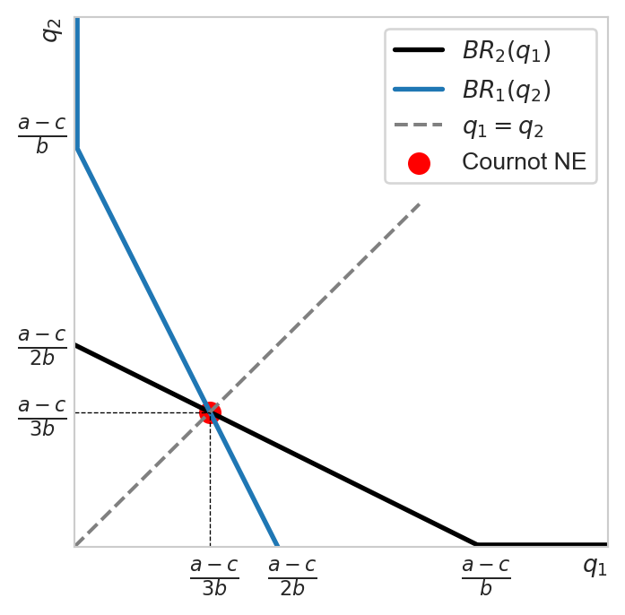

Chapter 5. Game theory and imperfect competition
1 A word on organization
This chapter contains a lot of definitions and concepts specific to game theory. In order to help quickly locate and link these concepts together, I have decided to put them all in Section 4. Whenever you encounter a new concept throughout the chapter, you will most likely find its definition there.
2 Game theory basics
2.1 Game building blocks and examples
In order to define a game, we typically need at least four elements:
- Players: who are playing the game (at least two)
- Rules: what are the rules of the game, what moves are possible and what are prohibited
- Outcomes: what are the possible results of the games (score combinations leading to a win or a loss, scenario(s) of a draw, etc.)
- Payoffs: the players’ preferences over outcomes
The objective of each player in a game is to identify strategies that maximize potential payoffs, given what they know about the rules of the game, their opponents, the possible outcomes and their preferences. A strategy is a complete contingent plan telling a player what action to take in every possible situation of the game.
Let us illustrate these elements via a couple of examples.
Example 1 (Matching pennies)
- Players: There are two players A and B
- Rules: Each player puts down a coin, either heads or tails up
- Outcomes: Player A wins if the coins match (both heads or tails). Player B wins if the coins do not match.
Example 2 (Tennis) Let us consider a tennis game in a single tennis tournament (there are doubles and mixed doubles, too). A tennis match typically consists of up to seven sets, each of which consists of several games. We will be considering a single tennis game.
Players: two players of the same sex
Rules:
- Scoring: A game is scored as 15, 30, 40 and game. If both players reach 40, it’s called “deuce.” To win from deuce, a player must win two consecutive points (advantage and game).
- Service: One player serves in each game. The server must hit the ball diagonally into the opponent’s service box. A serve that touches the net but lands in the correct box is a “let” and is replayed. A serve is a fault if it lands outside the service box or if the server misses the ball. Two consecutive faults result in a double fault, giving the point to the opponent.
- Rallies: After the serve, players rally by hitting the ball back and forth. The ball must be hit before it bounces twice on the player’s side.
- Winning Points: A point is won if the opponent fails to return the ball within the court boundaries, hits it into the net, or touches the net after hitting the ball before the ball lands on the other side of the court, etc.
Results: A single winner by means of the scoring rule (no ties).
2.2 Assumption of common knowledge of rationality
In all games studied, we assume that players are rational. Each player knows every element of the game, namely, the players involved, the strategy in each contingency and the resulting payoff in each situation. In addition, every player knows that the other player(s) know all of this, including the fact that this player knows that they know.
3 Graphical representation of games
There are two ways to represent a game: by means of a matrix (normal form) or a game tree (extensive form).
3.1 Normal form
The normal form is the representation of a game using a matrix whose columns and rows represent all possible outcomes. It is best used to represent games of simultaneous moves where order of play is not important.
3.1.1 Pure strategy Nash equilibrium
In the examples that follow, the first number represents the payoff to the player whose strategies show up on each row of the matrix. The second number reprsents the payoff to the player whose strategies show up on each column.Let us try to determine the best responses and the Nash equilibrium of each game. The NE that consists of a strategies that each player chooses with certainty is called a pure strategy NE. We will see that not all games have a pure strategy NE but if we allow players to choose certain strategies probablistically (as is often the case in sports), then a NE generally exists. This type of NE is called a mixed strategy NE.
Example 3
| Player A | |||
|---|---|---|---|
| Heads | Tails | ||
| Player B | Heads | (-1,1) | (1,-1) |
| Tails | (1,-1) | (-1,1) | |
Example 4 Consider this example from CoreEcon which describes a strategic situation between two farmers who decide on which crop to grow. If both grow the same crop, they will flood the market with the same good and pushing down the price. The land of the person named Anil is equally suitable for both types of crops (cassava and rice). For the other person, Bala, the land is as good as that of Anil for growing rice, but less so for cassava. The outcome of this situation can be predicted using a simple game theory setupt.
| Bala | |||
|---|---|---|---|
| Rice | Cassava | ||
| Anil | Rice | (4,4) | (6,3) |
| Cassava | (6,6) | (5,2) | |
Example 5 Consider a automobile market serviced by two firms, Ford and BMW. If both innovate (for example, introducing new EV models, incorporating AI, etc.), then they will share the market as before but earn lower profits due to the high R&D costs. If one innovates and the other does not, then the market share gained from the former will more than compensate for the high costs and it generates higher profits as a result. If both do not innovate, they continue to earn high profits.
| Vueling | |||
|---|---|---|---|
| Innovate | Do not innovate | ||
| EasyJet | Innovate | (5,5) | (10,2) |
| Do not innovate | (2,10) | (7,7) | |
Example 6 Game theory is very much alive in dating. In the simplest scenario, imagine two individuals (the players) deciding how much effort to put into the relationship. If both slack off, they split quickly and move on with no damage done. If one is committed while the other is lukewarm, the one committed ends up paying a higher price and potentially feeling resentful after the split. If both are committed (exerting high efforts), the relationship blossoms and they live happily ever after.1
| Lover A | |||
|---|---|---|---|
| Commit | Slack off | ||
| Lover B | Commit | (7,7) | (-2,5) |
| Slack off | (5,-2) | (0,0) | |
What are the differences in the outcomes of these games? Observe that the game of matching pennies in Example 3 does not have an equilibrium. There is always an incentive to deviate from a chosen strategy depending on the choice of the opponent. In Example 4, we have a unique Nash equilibrium that is also Pareto optimal.2 In Example 5, we have a unique Nash equilibrium which is not Pareto optimal: the pursuit of individual interest does not lead to a socially optimal outcome. This is an example of the famous Prisoners’ Dilemma game. In Example 6, we see a situation of non-uniqueness of equilibria.
3.1.2 Mixed strategy Nash equilibrium
Let us return to Example 3 to illustrate mixed strategy NE. Suppose that B chooses H with probability \(p\) and T with probability \(1-p,\) and A chooses H with probability \(q\) and T with probability \(1-q.\) The modified pennies matching game can be rerpresented as in Figure 5.
| Player A | ||||
|---|---|---|---|---|
| \(q\) | \(1-q\) | |||
| Heads | Tails | |||
| Player B | \(p\) | Heads | (-1,1) | (1,-1) |
| \(1-p\) | Tails | (1,-1) | (-1,1) | |
For each player, one strategy is preferred to the other iff it generates a higher expected payoff. For A, the expected payoff from playing Heads is:
\[ \mathbb{E}^A_H[X] = p \times 1 + (1 - p) \times (-1) = 2p - 1. \]
And from playing Tails is:
\[ \mathbb{E}^A_T[X] = p \times (-1) + (1 - p) \times 1 = 1 - 2p. \]
Hence A strictly prefers Heads to Tails if and only if
\[ \mathbb{E}^A_H[X] \gt \mathbb{E}^A_T[X] \iff p > \frac{1}{2}. \]
Hence the best response of \(A\) could be written as: \[ q(p) = \begin{cases} 1 & p > 0.5 \\ \in [0,1] & p = 0.5 \\ 0 & p < 0.5. \end{cases} \tag{1}\]
Likewise for B:
\[ \begin{aligned} \mathbb{E}^B_H[X] &\gt \mathbb{E}^B_T[X] \\ 1 - 2q &\gt 2q - 1 \\ q &< \frac{1}{2} \end{aligned} \]
The best response of \(B\) is thus:
\[ p(q) = \begin{cases} 1 & q < 0.5 \\ \in [0,1] & q = 0.5 \\ 0 & q > 0.5 \end{cases} \tag{2}\]
The msNE is at the intersection of the two best response curves (red dot in Figure 6), which is when both probabilities are equal to one-half:
\[ \mathrm{msNE}(q, p) = (0.5, 0.5). \tag{3}\]
If A and B are complete strangers then it is safe to assume that both play each strategy with the same probability (i.e., completely random). In this case, each player randomizes and we have a mixed strategy Nash equilibrium (msNE). After a few rounds, they might know each other better and are able to update the values of \(q\) and \(p\) accordingly and the game might end up with a pure strategy NE. In highly competitive sports, sometimes many strong players lose to completely unknown ones, why might it be the case? One explanation is data availability. Matches of highly ranked players receive much wider media coverage. Their style of play, strengths and weaknesses are analyzed to excruciating details by experts, including the opponents and their coaches. Consequently, we have a player that is almost completely exposed while the other remains a wild card. The lack of information plays to the advantage of the relatively unknown player, typically causing difficulties to the opponent in the first few rallies or encounters. But if there is anything remarkable about top athletes, it is their ability to adapt, i.e., to update their knowledge about the opponent’s style and counterstrike effectively. The advantage due to initial ignorance wears out pretty rapidly if the unknown player does not have real strengths.
3.2 Extensive form
The extensive form of the game records not just the outcomes but also the dynamic of the game. For this reason, it is often used to represent sequential games in which the order of play is important. Indeed, taking out the game dynamic and collapsing it into a matrix typically results in too many equilibria, as we see in Figure 8. In particular, the normal form representation provies two equilibria: (In, Accommodate) and (Out, Price War). Nevertheless, if we examine the game in extensive form using backward induction (starting from the end nodes), it is clear that the best response of the incumbent (P2) to the entrant’s “In” is to accommodate. Knowing this, the incumbent would choose to go in. Hence the only equilibrium of the game would be (In, Accommodate). The equilibrium (Out, Price War) is described as sequentially irrational because it is not a NE in the subgame starting from the decision node of the incumbent. In dynamic games, we would like to rule out such irrational equilibria, hence the need for the more refined solution concept of subgame-perfect equilibrium(Definition 9).
flowchart LR
entrant{P1} --> |In| incumbent{P2}
entrant -- Out --> A("(0,10)")
incumbent -- Accommodate --> B("(5,5)")
incumbent -- Price war --> C("(-2,-2)")
linkStyle 0 stroke:#111,stroke-width:4px,color:#000
linkStyle 2 stroke:#111,stroke-width:4px,color:#000
| Potential entrant | |||
|---|---|---|---|
| In | Out | ||
| Incumbent | Accommodate | (5,5) | (10,0) |
| Price war | (-2,-2) | (10,0) | |
3.3 Backward induction and SPE
It is important to know how to identify and write an SPE. We solve for SPE using backward induction:
- Start for the farthest end of the tree, focus on the decision point(s) of the last mover (the smallest subgames)
- Identify her BR and shade the branch associated with her BR (i.e., the NE associated with each of these subgames)
- Consider the second-to-last mover, identify her BR to the BR of the last mover, then shade this branch (another NE identified)
- Repeat the previous step until we reach the first mover at the root node (the largest subgame is the entire game itself)
Then we need to express the SPE as a strategy profile, which specifies the strategy for each player for every possible decision node where that player could be called to move, even for nodes that are not reached in equilibrium.
Example 7 Consider the following dynamic game with the first mover being Player 1 (P1). We would like to identify the SPE. For convenience I have put all the decision nodes in the diamond boxes.
flowchart LR
%% upper branch
first{P1} -- L --> secondL{P2}
secondL -- A --> firstL{P1}
firstL -- V --> out2("(1,6)")
firstL -- W --> out3("(4,5)")
firstL -- X --> out4("(5,2)")
secondL -- B --> out1("(7,1)")
%% lower branch
first -- R --> secondR{P2}
secondR -- C --> out5("(2,7)")
secondR -- D --> out6("(3,4)")
secondR -- E --> firstR{P1}
firstR -- Y --> out7("(6,8)")
firstR -- Z --> out8("(8,3)")
Observe that there are 5 subgames including the entire game itself. Let us use backward induction to solve for the NE in every subgame.
flowchart LR
%% upper branch
first{P1} -- L --> secondL{P2}
subgraph SG3
secondL -- A --> firstL{P1}
subgraph SG1
firstL -- V --> out2("(1,6)")
firstL -- W --> out3("(4,5)")
firstL -- X --> out4("(5,2)")
end
secondL -- B --> out1("(7,1)")
%% lower branch
end
first -- R --> secondR{P2}
subgraph SG4
secondR -- C --> out5("(2,7)")
secondR -- D --> out6("(3,4)")
secondR -- E --> firstR{P1}
subgraph SG2
firstR -- Y --> out7("(6,8)")
firstR -- Z --> out8("(8,3)")
end
end
style SG1 stroke:#0072c7,stroke-width:2px
style SG2 stroke:#4fe1d6,stroke-width:2px
style SG3 stroke:#db63d6,stroke-width:2px
We now look for the NE in each subgame.
flowchart LR
firstL{P1} -- V --> out2("(1,6)")
firstL -- W --> out3("(4,5)")
firstL -- X --> out4("(5,2)")
linkStyle 2 stroke:#111,stroke-width:4px,color:#000
flowchart LR
firstR{P1} -- Y --> out7("(6,8)")
firstR -- Z --> out8("(8,3)")
linkStyle 1 stroke:#111,stroke-width:4px,color:#000
flowchart LR
secondL{P2} -- A --> out4("(5,2)")
secondL -- B --> out1("(7,1)")
linkStyle 0 stroke:#111,stroke-width:4px,color:#000
flowchart LR
secondR{P2} -- C --> out5("(2,7)")
secondR -- D --> out6("(3,4)")
secondR -- E --> out8("(8,3)")
linkStyle 0 stroke:#111,stroke-width:4px,color:#000
flowchart LR
first{P1} -- L --> out4("(5,2)")
first -- R --> out5("(2,7)")
linkStyle 0 stroke:#111,stroke-width:4px,color:#000
Finally putting it all together, we can write the SPE as: \[ SPE = \{(L,\: A/C, \: X/Z\}. \tag{4}\] Recall that we have to specify the strategy for each player for every possible decision node where that player could be called to move, even for nodes that are not reached in equilibrium.
flowchart LR
%% upper branch
first{P1} -- L --> secondL{P2}
secondL -- A --> firstL{P1}
firstL -- V --> out2("(1,6)")
firstL -- W --> out3("(4,5)")
firstL -- X --> out4("(5,2)")
secondL -- B --> out1("(7,1)")
%% lower branch
first -- R --> secondR{P2}
secondR -- C --> out5("(2,7)")
secondR -- D --> out6("(3,4)")
secondR -- E --> firstR{P1}
firstR -- Y --> out7("(6,8)")
firstR -- Z --> out8("(8,3)")
linkStyle 0 stroke:#0072c7,stroke-width:4px,color:#000
linkStyle 4 stroke:#0072c7,stroke-width:4px,color:#000
linkStyle 7 stroke:#db63d6,stroke-width:4px,color:#000
linkStyle 11 stroke:#0072c7,stroke-width:4px,color:#000
linkStyle 1 stroke:#db63d6,stroke-width:4px,color:#000
4 Key game concepts
Definition 1 (Strategy) A strategy is a complete contingent plan specifying which action a player selects in every possible situation (contingency) she might face during a game.
Example 8 In the pennies matching game in Example 1, each player has two possible strategies: heads (H) or tails (T). We can write \(S_A=S_B=\{H, T\}.\)
Definition 2 (Strategy profile) A strategy profile is a list describing the strategies that each player selects. In a game of \(N\) players, a strategy profile is \(s=(s_1,s_2,\dots,s_N)\). Equivalently we often write \(s=(s_i,s_{-i})\) for any \(i=1,\dots,N.\) Here \(s_{-i}\) means the strategies selected by players other than \(i.\)
Example 9 In the pennies matching game, there are four possible strategy profiles: \[ s \in \{(H,T), (T,H), (T,T), (H,H)\}. \] Hence a strategy profile is an element in the product space \(S_A\times S_B,\) or more generally an element in \(S_i\times S_{-i}\) for any \(i=1,\dots,N.\)
Definition 3 (Payoff function) The payoff function of a player \(i\) is a mapping from a strategy profile to a real number \(u_i : S_i \times S_{-i} \to \mathbb{R}.\)
Observe that the payoff of a player typically depends on the strategies selected by the others. This is the strategic property of games.
Definition 4 (Strategic dominance) Strategy \(s_i\) is a weakly dominant strategy of player \(i\) if \[ u_i(s_i, s_{-i}) \geq u_i(s_j, s_{-i}), \tag{5}\] for every \(s_i \neq s_j\) and \(s_{-i}\) selected by the other players. If the inequality sign in condition 5 is strict, then \(s_i\) is called a strictly dominant strategy. If the inequality sign reverses direction, then player \(i\) views \(s_i\) as a weakly dominated strategy (strictly dominated if the inequality sign is strict.)
Definition 5 (Best response) The strategy \(s_i\) of player \(i\) is called the best response to her opponents’ strategy profile \(s_{-i}\) if: \[ u_i(s_i, s_{-i}) \geq u_i(s_j, s_{-i}), \quad\forall j\neq i. \tag{6}\] We often write: \[ s_i \in BR_i(s_{-i}). \tag{7}\]
Remark 1. In general, for each strategy profile \(s_{-i},\) the best response coming from \(i\) needs not be unique, i.e., the best response is a correspondence. When \(BR_i(s_{-i})\) is a singleton for every possible \(s_{-i},\) we have a best response function.
Remark 2. Observe that a dominant strategy is a best response, but not conversely. In order for a best response to be a dominant strategy, condition 6 has to hold for every possible strategy profile selected by the other players. In other words, whatever the strategies selected by the other player(s), the best response remains the same for player \(i.\) Strategic dominance is thus a much stronger than best response.
Definition 6 (Nash equilibrium) A strategy profile \(s^*=(s^*_i, s^*_{-i})\) is a Nash equilibrium if every player plays their best reponse given their opponnents’ strategies, that is: \[ s^*_i \in BR_i(s^*_{-i}),\quad \forall i=1,...,N. \tag{8}\]
Definition 7 (Information set) In the context of extensive form games, an information set faced by a player is a set that connects all the nodes that the player cannot distinguish.
Definition 8 (Subgame) A subgame is a portion of an extensive-form game that contains a decision node and all subsequent nodes following it. Graphically, if we draw a circle around a subgame, then this circle cannot cross any information set: every subgame must contain all its information sets. The presence of information sets thus reduces the number of subgames.
Definition 9 (Subgame-perfect equilibrium) A strategy profile \((s_i^*, s^*_{-i})\) is a SPE if it specifies a Nash equilibrium in each subgame.
5 Applications to imperfect competition
5.1 Cournot model
The Cournot model is a simultaneous-moves game in which firms compete on quantity. Consider an industry with two firms (i.e., a douopoly) selling a homogeneous product. Each firm \(i\) independently and simultaneously determines output \(q_i\) to maximize profits, \(i=\{1, 2\}.\) They each face a linear total cost \(C_i(q_i) = cq_i\), \(c>0.\) Linear inverse demand curve: \(p(q_1, q_2) = a - b\left(\sum_{i=1}^N q_i\right)\) where \(a, b>0.\) Notice that the production choice of each firm affects the market price of the good and consquently the bottom line of the other firm. This would not have been the case in a perfectly competitive market.
Each firm \(i\) solves its profit maximization problem to determine the optimal production level: \[ \begin{aligned} \max_{q_i} \pi_i &= R_i(q_i) - C_i(q_i) \\ &= p(q_1, q_2)q_i - cq_i \\ &= [a - b(q_1 + q_2)]q_i - cq_i \end{aligned} \tag{9}\]
The FOC yields: \[ \frac{\partial \pi_i}{\partial q_i} = 0 \iff a - 2bq_i - bq_j = c. \tag{10}\]
From Equation 10 we can derive the best response (BR) function, which specifies the optimal output of each firm given the output choice of the other firm:
\[ q_i = BR_i(q_j) = \frac{a - c}{2b} - \frac{q_j}{2}, \quad i\neq j. \tag{11}\]
The two best response functions specify the Nash equiblirium of the the game. \[ \begin{cases} q_1 &= \frac{a - c}{2b} - \frac{q_2}{2} \\ q_2 &= \frac{a - c}{2b} - \frac{q_1}{2}. \end{cases} \]
Solving this system, we obtain the NE of the Cournot game: \[ (q_1^*, q_2^*) = \left(\frac{a-c}{3b}, \frac{a-c}{3b}\right). \tag{12}\]
Let us try and visualize this outcome.

For completeness let us compute the equilibrium price of the duopoly, aggregate output and the profits earned by each firm.
Total output: \[ Q^C = q_1 + q_2 = 2q^C = \frac{2(a - c)}{3b}. \tag{13}\]
Equlibrium price via the market demand curve: \[ p^C = a - bQ^C = \frac{a + 2c}{3}. \tag{14}\]
Identical individual profits equal to: \[ \pi^C = p^C q^C - cq^C = \frac{(a - c)^2}{9b}. \tag{15}\]
5.2 Stackelberg model
Consider 2 firms with the same constant marginal cost \(c\) as in the Cournot case. They also compete on quantity, but sequentially. THe structure of the game is the following:
- First, firm 1 chooses \(q_1\)
- Then, having observed the choice of firm 1, firm 2 chooses \(q_2\)
The first mover advantage can be due to legal barriers. For example, if firm 1 invents a new drug, it typically has a patent that gives exclusive rights to produce and sell it during the lifetime of the patent (up to 20 years for certain drugs).
We solve this game by backward induction, starting from firm 2, the follower.
5.2.1 PMP of the follower
The PMP of the follower (Firm 2): \[ \max_{q_2} [a - b(q_1 + q_2)]q_2 - cq_2. \]
FOC w.r.t \(q_2\) yields the BR function for Firm 2: \[ q_2(q_1) \equiv BR_2(q_1) = \frac{a - c}{2b} - \frac{q_1}{2}. \tag{16}\]
Observe that Equation 16 coincides with Equation 11 since in both cases Firm 2 treats \(q_1\) as exogenous
5.2.2 PMP of the leader
Firm 1 chooses its own output to maximize profits: \[ \max_{q_1} [a - b(q_1 + BR_2(q_1))]q_1 - cq_1. \tag{17}\]
In Equation 17, Firm 1 anticipates that Firm 2 will be maximizing her profits, i.e., settig \(q_2 = BR_2(q_1)\).
The FOC w.r.t \(q_1\) yields the BR function for Firm 1: \[ \frac{a - c - 2bq_1}{2} = 0 \iff q_1^S = \frac{a-c}{2b}. \tag{18}\]
Firm 2’s output can be found using Equation 16: \[ q_2^S = \frac{a - c}{4b} = \frac{q_1^S}{2}. \tag{19}\]
5.2.3 Stackelberg vs Cournot
In Cournot games, both firms produce the same output that is less than that of the Stackelberg’s leader but more than that of the Stackelberg’s follower: \[ q^S_{\text{follower}} < q^C < q^S_{\text{leader}}. \]
The equilibrium price can be computed using the demand function: \[ p^S = a - b(q^S_{\text{follower}} + q^S_{\text{leader}}) = \frac{3a + c}{4}, \tag{20}\] which is greater than the Cournot price \(p^C=\frac{a+2c}{3}\) since \(a>c.\)
Profits: \[ \pi_{\text{leader}} = q^S_1(p^S - c) = \frac{3(a-c)^2}{8b}. \tag{21}\]
\[ \pi_{\text{follower}} = q^S_2(p^S - c) = \frac{3(a-c)^2}{16b}. \tag{22}\]
Hence the leader earns higher profits than in the Cournot case thanks to the first mover’s advantage, but the follower earns lower profits.
To sum up:
\[ \begin{aligned} &p^S > p^C, \\ &q^S_{\text{follower}} < q^C < q^S_{\text{leader}}, \\ &\pi_{\text{follower}} < \pi^C < \pi_{\text{leader}}. \end{aligned} \]
6 Exercises
Exercise 1 Rock-Paper-Scissors is another simultaneous moves game. It can be played among multiple players; Figure 16 illustrates such a game between two. If two players make the same move, it is a draw. Otherwise rock beats scissors, which beats paper, which in turn beats rock. Find the best response of each player and determine if the game has a pure strategy NE. How about a mixed strategy NE?
| Player A | ||||
|---|---|---|---|---|
| Rock | Paper | Scissors | ||
| Player B | Rock | (0,0) | (-1,1) | (1,-1) |
| Paper | (1,-1) | (0,0) | (-1,1) | |
| Scissors | (-1,1) | (1,-1) | (0,0) | |
Exercise 2 Consider two firms competing à la Cournot facing the same linear demand function \(p(q_1,q_2)=a-b(q_1+q_2)\) but with asymmetric costs \(C_i(q_i) = c_i q_i\) for \(c_i > 0\) and \(c_i\neq c_j\), \(i,j=\{1, 2\}\). Determine the NE of the Cournot game, the market price as well as the profits earned by each firm in equilibrium.
Exercise 3 Consider again the Cournot model with identical linear costs and linear demand function. Determine the NE in the general case of \(N\) firms. How do the equilibrium quantity, price and profits change as a function of \(N?\) What happens as \(N\) tends to infinity?
Exercise 4 This exercise on complementary pricing is adapted from exercise 11 of chapter 13 of the AF Int textbook. Consider a situation where two firms of complementary goods simultaneously decide on how to price their goods. Suppose that there are only two actions possible: High or Low. The normal-form representation is presented here where the payoffs (in dollars) denote the profits for each firm:
| Firm 2 | |||
|---|---|---|---|
| High | Low | ||
| Firm 1 | High | (90,75) | (35,40) |
| Low | (45,30) | (60,60) | |
Find all pure-strategy Nash equilibria of this game.
Suppose now that one firm sets their price first, and then the other observes and responds. Depict the extensive form of this game and find the SPE. You should consider two cases each of which corresponds to a different first mover.
Compare the results from the previous parts. Comment on the similarities and/or differences.
Exercise 5 Find the SPE of the following game with imperfect information. The dashed box means that the player in question faces an information set when called to make a move. In this example, if P1 makes the R move, she will not be able to observe P2’s move when it is her turn to move again. In other words, she does not know whether she is on the C or the D branch.
graph LR
%% left branch
player1{P1} -- L --> player2L{P2}
player2L -- A --> player1LL{P1}
player2L -- B --> player1LR{P1}
player1LL -- U --> au("(1,4)")
player1LL -- V --> av("(4,5)")
player1LR -- W --> bw("(7,2)")
player1LR -- X --> bx("(3,8)")
player1 -- R --> player2R{P2}
player2R -- C --> player1RL{P1}
player2R -- D --> player1RR{P1}
player1RL -- Y --> cy("(7,2)")
player1RL -- Z --> cz("(8,1)")
player1RR -- Y --> dy("(6,3)")
player1RR -- Z --> dz("(5,7)")
style player1RL stroke-dasharray: 4 4
style player1RR stroke-dasharray: 4 4